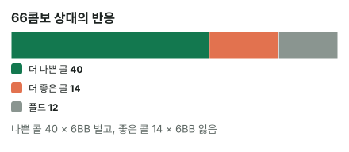

안녕하세요. E09에서 머지 벳은 "우리보다 조금 약한 핸드의 콜"을 노린다고 했죠. 오늘은 그 말을 리버 한 판에서 콤보로 계산해요.
탑페어로 리버를 맞았는데 상대가 체크했어요. 그냥 쇼다운할지, 조금이라도 더 받으러 벳할지. 실전에서 늘 마주치는 고민이죠.
이 글에서 배울 것
- 씬밸류(얇은 밸류)의 정확한 뜻, 그리고 벳을 체크와 비교해야 하는 이유
- "더 나쁜 콜 − 더 좋은 콜"로 벳이 체크보다 더 버는 돈을 구하는 법(팟 크기가 식에 안 들어가는 이유까지)
- 벳 크기를 키우면 무엇이 바뀌는지, 그리고 레이즈가 이 계산을 어떻게 흔드는지
오늘의 핸드
Hero (BTN · 100BB) / 상대(BB)


프리플랍 · 플랍 · 턴
Hero(BTN) 2.5BB 오픈 → 상대(BB) 콜. 플랍·턴은 작은 벳과 콜로 흘러가 리버에서 팟이 20BB가 됐어요.
리버 · 팟 20BB


상대(BB) 체크 → Hero는 6BB로 작게 벳할까, 체크할까?
Hero는 K 원페어, 키커 T의 탑페어예요. 다섯 장으로 보면 K·K·J·T·8이라 T가 키커로 살아 있어요. 리버에 하트가 안 와서, 상대가 하트 드로우였다면 빗나갔어요.
결론부터 말할게요. 오늘 가정한 상대라면 6BB 벳이 체크보다 한 번에 약 2.36BB 더 법니다.
1단계. 씬밸류란?
용어
씬밸류 = 콜해 주는 상대 핸드 가운데 우리가 이기는 쪽이 지는 쪽보다 많긴 하지만, 지는 쪽도 꽤 섞여 있을 때 하는 밸류 벳이에요. "콜 받으면 늘 이기는" 넛 밸류와 달리, 콜을 받고 지는 경우도 계산에 넣어야 하죠.
비유: 값을 조금 올려 부르기
시장에서 물건값을 조금 올려 불러 볼 때가 있죠. 그 값에도 사 줄 손님(더 약한 핸드)이 많으면 이득이에요. 그런데 그 값에 사는 손님 중에 우리보다 좋은 물건을 쥔 사람(더 강한 핸드)이 많으면, 올려 부른 만큼 오히려 잃어요.
2단계. 왜 "체크와 비교"일까
체크하면 일어나는 일
리버에서 체크하면 바로 쇼다운이에요. 상대보다 좋으면 팟 20BB를 가져오고, 나쁘면 못 가져와요. 더 걸리는 돈은 없어요.
벳하면 달라지는 것만 세기
벳을 체크와 비교하면, 상대 핸드마다 벳 때문에 달라지는 돈은 셋 중 하나예요(상대가 레이즈 없이 콜·폴드만 한다고 가정).
| 상대 핸드 | 상대 반응 | 체크와 비교한 차이 |
|---|---|---|
| Hero보다 나쁨 | 콜 | 6BB를 더 벌어요 |
| Hero보다 좋음 | 콜 | 6BB를 더 잃어요 |
| Hero보다 나쁨 | 폴드 | 어차피 이겼을 팟이라 차이 없음 |
이게 무슨 뜻이냐면
팟 20BB는 이 표 어디에도 없어요. 더 나쁜 핸드가 접어도 Hero는 원래 이기던 팟을 그대로 가져오고, 더 좋은 핸드는 접지 않는다고 가정했으니까요(더 좋은 핸드가 접는다면 그건 블러프의 몫이라 팟이 들어와요). 그래서 씬밸류 계산에는 팟 크기가 안 들어가요. 오로지 "벳 크기 × 누가 콜하나"예요.
3단계. 상대 체크 레인지 (가정 레인지 기준)
| 묶음 | 핸드 | 콤보 |
|---|---|---|
| 더 좋은 핸드(콜) | KQ(키커가 높은 K), KJ(투페어) | 8 + 6 = 14 |
| 더 나쁜 핸드(콜) | K9, K7s~K4s(키커가 약한 K), QJ·JT(J 페어), 98s(8 페어) | 8 + 8 + 12 + 9 + 3 = 40 |
| 더 나쁜 핸드(폴드) | 빗나간 하트 드로우 | 12 |
| 합계 | 66 |
이 표는 상대가 리버에 체크한 레인지예요. AK나 K8·K3·K2·J8 같은 투페어, 셋은 이 상대가 리버에 먼저 벳한다고 가정해 넣지 않았어요. KT는 Hero와 비겨서 콜해도 벳·체크 차이가 0이라 뺐어요(넣으면 전체 콤보 수만 늘어요).
빗나간 하트 드로우는 A♥Q♥·A♥T♥·A♥9♥·A♥6♥·A♥5♥·A♥4♥·Q♥T♥·Q♥9♥·T♥9♥·9♥7♥·7♥6♥·6♥5♥ 12개예요. Hero는 클럽 두 장이라 이 중 하나도 지우지 않아요.
💡 빨리 세는 팁: K는 보드에 1장, Hero 손에 1장 → 남은 K 2장, K와 다른 숫자는 2 × 4 = 8. 수딧 K는 남은 K♠·K♦에 같은 무늬 하나씩이라 숫자마다 2. KJ는 J가 보드에 1장이라 2 × 3 = 6. JT는 J 3장 × T 3장(T♣가 Hero 손에) = 9. 98s는 8♥가 보드라 하트가 빠져 3
키커가 가르는 줄
KQ는 K·K·Q·J·8로 Hero의 K·K·J·T·8보다 키커가 높아요. 반대로 K9는 K·K·J·9·8이라 Hero의 T에 져요. 같은 K 페어라도 키커 한 장이 "더 좋은 콜"과 "더 나쁜 콜"을 가르는 거예요.
4단계. 벳이 더 버는 돈
합계로 세기
66콤보 상대로 같은 벳을 한 번씩 한다고 생각해 볼게요.
- 더 나쁜 콜 40콤보 × 6 = 240BB 더 벌기
- 더 좋은 콜 14콤보 × 6 = 84BB 더 잃기
체크보다 더 버는 돈 = (240 − 84) ÷ 66 = (40 − 14) × 6 ÷ 66 = 약 2.36BB

콜만 따로 보면
콜을 받는 54개 콤보 가운데 Hero가 이기는 건 40콤보, 약 74.07%예요. 벳은 결국 "콜 받았을 때 이기는 비율"로 돈을 벌어요.
씬밸류의 기준
식에서 벳 크기 6은 양쪽에 똑같이 곱해져요. 그러니 부호를 정하는 건 (더 나쁜 콜 − 더 좋은 콜)뿐이에요. 이게 0보다 크다는 건, 콜하는 핸드 가운데 더 나쁜 핸드가 절반을 넘는다는 뜻이에요.
이게 무슨 뜻이냐면, 레이즈가 없을 때 씬밸류의 기준은 "콜 받았을 때 절반 넘게 이기나" 하나예요. 블러프캐처가 콜할 때의 필요 에퀴티처럼 팟 크기에 따라 바뀌지 않아요.
왜 그럴까: 더 나쁜 핸드의 폴드는 공짜라서
벳의 손해는 더 좋은 핸드에 콜받을 때 하나뿐이에요. 더 나쁜 핸드가 접는 건 손해가 아니에요. 체크했어도 이겼을 팟을 그대로 가져오니까요.
그래서 씬밸류는 "상대가 접을까"를 걱정하는 벳이 아니에요. 콜하는 사람들의 구성만 보면 돼요. 이 점이 블러프와 정반대예요. 블러프는 폴드가 이득의 전부고, 씬밸류는 폴드가 이득과 상관없어요.
자주 하는 실수
실수 1. "탑페어니까 크게 벳" 크게 걸수록 상대가 콜에 필요한 에퀴티가 올라가서, J 페어·8 페어 같은 약한 핸드가 먼저 접을 수 있어요. 반면 KQ·KJ는 크기와 상관없이 콜하기 쉽죠. 크기를 키우면 약한 콜만 줄고 강한 콜은 남는지를 같이 봐요.
실수 2. "KQ·KJ가 있으니 무서워서 체크" 더 좋은 콜이 14콤보 있는 건 맞아요. 하지만 더 나쁜 콜이 40콤보라 벳이 한 번에 약 2.36BB 더 벌어요. 지는 경우가 있느냐가 아니라 몇 대 몇이냐로 정해요.
실수 3. "팟이 크니까 벳"처럼 팟을 직접 근거로 들기 2단계 표처럼 팟 자체는 벳·체크 두 쪽에 똑같이 남아요. 팟이 영향을 주는 건 상대의 콜 가격을 통해서예요(20BB 팟에 6BB면 상대는 싼 가격에 콜할 수 있죠). 그러니 팟은 "누가 콜하나"를 짐작하는 데 쓰고, 판단은 콜 레인지 안의 비율로 해요.
"탑페어인데 왜 '얇은' 밸류예요?"
탑페어지만 KQ·KJ처럼 Hero를 이기는 핸드도 콜하기 때문이에요. 넛처럼 콜하는 핸드를 다 이기는 게 아니라, 이기는 콜과 지는 콜이 섞여 있어서 얇다고 해요.
얇을수록 계산이 예민해요. 오늘은 콜 54개 중 40개를 이겨 여유가 있었지만, 더 나쁜 콜 몇 묶음만 빠져도 기준선 근처로 내려와요.
숫자가 뒤집히는 지점
- 기준은 콜하는 핸드 중 더 나쁜 핸드의 비율이 절반을 넘는지예요
- 벳을 키우면 더 나쁜 핸드가 덜 콜할 수 있어서, 같은 상대라도 크기마다 비율을 다시 세야 해요
- 상대가 레이즈를 섞으면 "콜·폴드만" 가정부터 다시 세워야 해요
선생님의 한마디
리버에 상대가 체크하면, 벳 버튼 전에 이렇게 물어요. "이 크기에 콜할 핸드를 떠올려 봤을 때, 나보다 약한 게 더 많나?" 떠오르는 핸드가 대부분 나를 이기는 핸드라면, 체크가 더 나은 선택일 수 있어요.
연습 문제 (같은 리버, 같은 Hero 핸드)
학습툴 [콤보 분류 보기]는 준비 중이에요. 표를 보며 직접 세어 보세요.
문제 1. 이 상대는 작은 벳에도 K9, K7s, K6s로만 콜하고 나머지 더 약한 핸드는 접어요(KQ·KJ는 그대로 콜). 벳과 체크 중 무엇이 나을까요?
정답 보기
더 나쁜 콜 12콤보, 더 좋은 콜 14콤보. 콜 받을 때 이기는 비율 약 46.15%로 절반이 안 돼요. 체크보다 더 버는 돈 = (12 − 14) × 6 ÷ 66 = 약 −0.18BB → 체크가 나아요.
문제 2. 이번엔 15BB로 크게 벳해요. 상대는 K9·K7s~K4s로만 콜하고 J 페어·8 페어는 접어요. 6BB 벳과 비교하면?
정답 보기
더 나쁜 콜 16콤보, 더 좋은 콜 14콤보. 콜 받을 때 이기는 비율 약 53.33%. 체크보다 더 버는 돈 = (16 − 14) × 15 ÷ 66 = 약 0.45BB. 체크보다는 낫지만 6BB 벳(약 2.36BB)보다 훨씬 적어요. 오늘 가정한 상대처럼 크게 걸 때 약한 핸드가 떨어져 나가면, 두 크기 중에서는 작은 벳이 더 이득이에요.
문제 3. 같은 6BB 벳인데, 이 상대가 빗나간 하트 드로우 일부로 블러프 레이즈를 섞는다고 해 볼게요. Hero가 레이즈를 맞으면 늘 접는다면, 오늘 계산에서 무엇이 새로 손해가 될까요? (숫자 없이)
정답 보기
블러프 레이즈에 접으면 Hero는 체크했으면 이겼을 팟 20BB와 벳 6BB를 같이 내줘요. 원래 "차이 없음" 칸이던 더 나쁜 핸드가 이제 손해 칸으로 옮겨 오는 거예요. 그래서 레이즈가 섞이면 씬밸류의 기준선이 올라가고, 이때는 팟 크기도 계산에 들어와요. "콜·폴드만" 가정이 얼마나 중요한지 보여 주는 장면이에요.
핵심 정리
- 씬밸류는 체크와 비교해서, 벳 때문에 달라지는 돈만 세요
- 레이즈가 없으면 차이 = (더 나쁜 콜 − 더 좋은 콜) × 벳 ÷ 전체 콤보
- 더 나쁜 핸드의 폴드는 손해가 아니라서, 판단은 콜하는 핸드의 구성 하나로 정해요
- 벳 크기는 그 구성을 바꾸는 손잡이예요. 크기마다 콜 레인지를 다시 세요
정리하며
오늘은 K♣T♣ 탑페어로 리버에서 6BB 씬밸류 벳을 체크와 비교했어요.
더 나쁜 콜 40콤보와 더 좋은 콜 14콤보를 세어, 벳이 한 번에 약 2.36BB 더 번다는 걸 봤죠. 키커 T 한 장이 K9 아래와 KQ 위를 갈랐고, 크기를 키우거나 레이즈가 섞이면 같은 탑페어도 계산이 달라졌어요.
다음 글 E23에서는 계산에서 잠시 벗어나 버블·파이널 테이블의 긴장을 다뤄요. 긴장될 때 결정 전에 무엇부터 확인하면 좋을지 이야기해요.
AI 작성 · 숫자는 계산 검증 (콤보는 실제 카드로 하나씩 셈) · 가정 레인지 기준 (솔버 결과 아님) · 상대는 레이즈 없이 콜·폴드만 한다고 가정 · 리버 마지막 결정